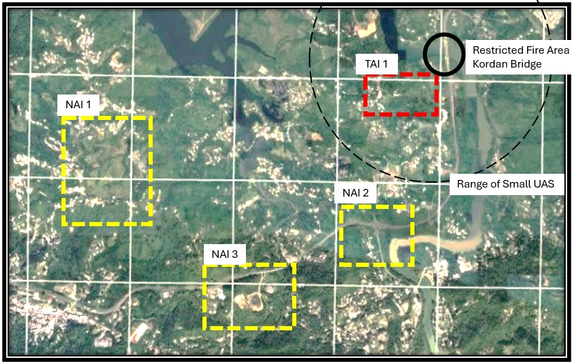

Decide: Target Synchronization Matrix
The intelligence update
The S-2 has been working while you built the HAT. He cannot tell you where the enemy is, but he can assess the terrain and tell you where the enemy is likely to be.
| Term | What it is | Use |
|---|---|---|
| Named Area of Interest (NAI) | area selected for monitoring enemy activity to collect critical information. | assigned to intelligence and reconnaissance assets to confirm or deny enemy courses of action (COAs) |
| Target Area of Interest (TAI) | Area friendly units can attack high-payoff targets (HPTs) using direct or indirect fires. | Primarily focused on engagement and fires execution |
These definitions are simplified for this course. Flagged for review by a subject matter expert.

The target package
A target package is the plan for one target. It names four things: the sensor that will find it, the sensor that will find it if the first one cannot, the asset that will attack it, and the asset that will attack it if the first one cannot.
The HAT has already told you which weapon is preferred against each target. The package is where that preference meets the ground. It asks where the S-2 expects this target to be, what can see that place, and what is permitted to fire into it.
Planning data — ISR and collections management
Long-range ISR UAS. We hold two aircraft. Each flies for two hours, and the battery needs two hours to charge once it lands. One aircraft can therefore be in the air at any time. Nothing else we own can watch a named area of interest.
Scout team. Very hard to detect, and it can stay where it is. It can only see the ground in front of it: the bridge, and part of TAI 1.
The scout team's sUAS. The team holds several airframes and can charge them. Each one flies for about thirty minutes. By launching the next drone as the last one comes back, the team can keep one area under watch for as long as it judges necessary.
| Sensors you hold | Attack assets you hold |
|---|---|
| Scout team sUAS Long-range ISR UAS |
M101 105 mm howitzer battery M109 155 mm battery One-way attack UAS |
Electronic signals indication is not offered here: it reports an area rather than a point, and it never sees the target itself, so its report fails both target location error and minimum size. It cues another sensor. It does not carry a package on its own.
Task 1.11 — Build the target packages
NOT DONEOne row per place a target may be found: the same target in two places is two packages. Find that place on the map above and ask what can see that far — the two sensors are accepted in either order. Then start from the attack guidance matrix you built in 1B and ask whether that ground changes the answer; the attack assets are ranked, so their order counts.
High-payoff target 1. Effect required: neutralize. Attacked immediately.
Sensors. The bridge is the one piece of ground the scout team can see with its own eyes, and it is inside the range of the small UAS. Either sensor can lead.
Attack. Inside the restricted fire area the drone is the only asset permitted to fire. There is no second asset to name.
The same target, one bound short of the bridge.
Sensors. NAI 2 lies outside the range of the small UAS, and the scout team cannot see it from the bridge. Only the long-range ISR UAS reaches it.
Attack. This is the one package where the drone does not lead against a target the attack guidance matrix ranks it first for. The next task asks why.
High-payoff target 2. Effect required: suppress. Attacked as a planned target.
Sensors. TAI 1 is the only area of interest inside the range of the small UAS. The scout team flies those drones, and from where it lies it can also see part of TAI 1 with its own eyes.
Attack. Straight from the attack guidance matrix. The drone is primary because a launcher must be hit rather than bracketed, and the 105 mm battery follows it.
High-payoff target 3. Effect required: neutralize. Attacked immediately.
Sensors. Both areas are well outside the range of the small UAS, and the scout team cannot walk that far behind the enemy. Only the long-range ISR UAS reaches them, so there is no second kind of sensor to assign. We hold two airframes, and the matrix below uses both.
Attack. Straight from the attack guidance matrix. An area weapon against an area target, and we hold more 105 mm rounds than 155 mm.
High-payoff target 4. Effect required: destroy. Attacked as acquired.
Sensors. The command post shares NAI 3 with the mortars, and nothing is watching for it on its own account. It is found while the long-range ISR UAS is there for the mortars, which is what the matrix below shows.
Attack. Straight from the attack guidance matrix. The commander requires the command post destroyed, destroy needs weight, and the 155 mm battery leads.
When the package and the matrix disagree
Three of your five packages copy the attack guidance matrix exactly. The two engineer packages do not, and they do not agree with each other. At NAI 2 the matrix ranks the one-way attack UAS first and your package ranks the M101 105 mm howitzer battery first.
That is not an error in either product. They answer different questions.
The attack guidance matrix has to hold for that target wherever it appears, because the officer reading it does not know where the report will come from. The target package is built for where the S-2 expects to find it. When intelligence tells us something new about the ground, the package can be sharper than the matrix.
Task 1.12 — Why the package changed the order
NOT DONEThe attack guidance matrix ranks the one-way attack UAS first against this target.
Correct. Intelligence says we will see the engineers before the bridge, at a crossroads in the open, where both batteries can range them and fire landing near them is enough. The drone is single-use and we hold ten; the M101 has 300 rounds. Where the guns will do the job, the plan spends rounds and keeps airframes.
No. Nothing in the matrix is wrong. It ranks weapons against a target type without knowing where that target will be found, and that is the only job it has. The package knows something the matrix could not.
No. The drone carries the smaller warhead and does not crater, which is why it is the only asset permitted inside the restricted fire area. Collateral damage is an argument for the drone, not against it.
No. Neither product replaces the other. The matrix is what you go back to when the package cannot be executed, which is the next question.
The NAI 2 package names the M101 first and the M109 second.
Correct. The package is built for the expected case and is fast because of it. When the expectation does not hold — they are moving, or they have reached the bridge where no gun may fire — you fall back to guidance that was written without assuming where they would be.
They are moving toward the bridge. Waiting for the halt means engaging them on it, inside the restricted fire area, where no gun may fire at all.
No. The package is a plan, not a limit on what you may use. Naming the guns first did not remove the drone from the inventory.
No time. A package is built in planning; this decision is made in minutes with the target under observation. The matrix is the product already written for it.
This is one cell’s answer. Another fire support coordination cell could rank these assets differently and defend it from the same ground and the same inventory.
The target synchronization matrix makes the expected case fast. The HAT is what saves you when the expected case is wrong.
The fires synchronization matrix
Time is the horizontal axis. Our assets are the vertical. Each target has a sensor and a shooter, with a second of each where availability allows.
The matrix is produced by a group of planners, experts in the weapon systems and in collections. Its purpose is to synchronize their efforts before any order goes out to a fires asset or a collection asset.
| Asset | T-4 | T-3 | T-2 | T-1 | T=0 | T+1 | T+2 | T+3 | T+4 | T+5 | T+6 | T+7 |
|---|---|---|---|---|---|---|---|---|---|---|---|---|
| Surveillance assets | ||||||||||||
| Scout team | Kordan Bridge / engineers | TAI 1 / ATGM | ||||||||||
| sUAS | TAI 1 / ATGM | |||||||||||
| Long-range ISR UAS #1 | NAI 2 / engineers | NAI 1 / mortars | NAI 3 / mortars | |||||||||
| Long-range ISR UAS #2 | NAI 1 / mortars | NAI 3 / mortars | NAI 3 / mortars or command post | |||||||||
| Attack assets | ||||||||||||
| M109 155 mm battery | Mortars / command post | |||||||||||
| M101 105 mm howitzer battery | Engineer team | ATGM | Mortars | |||||||||
| One-way attack UAS | Engineer team | ATGM | Command post | |||||||||
Engineer team ATGM section 120 mm mortar platoon Battalion command post
A surveillance block names the area being watched and the target expected there. An attack block names the target that asset is held against. An empty cell means the asset is unassigned and available.
How the planners arrived at this timeline
- T equals zero is the hour friendly forces reach the bridge. Every other hour is counted from it.
- The commander ordered that the ATGM section is not struck before T minus 1, to preserve the element of surprise.
- The commander assessed that crossing and securing the far side takes four hours.
- When friendly forces take the bridge at T equals zero, the engineer team stops being important.
- Four hours after that, at T plus 4, the ATGM section stops being important as well.
Finish both tasks on this page and the completed fires synchronization matrix will appear above.
We now have a fires plan to engage the enemy deliberately and dynamically. The Decide step is complete.